The Digital Tab
Everything the Digital Extension decodes shows up in the Digital tab of the control drawer. It shows one mode at a time, in three views:
- Overview: one row per station, aircraft, pager, vehicle or node: what it sent last and when. Open a row for everything known about it and its messages.
- Raw: every single packet as it was received, newest first.
- Map: everything that reported a position.
All decoded data is stored on the phone. The tab works the same whether the mode is being received right now or you are looking at what was received yesterday. This page explains the controls that all modes share. What a mode's rows, cards and fields mean is explained on the mode's own page (⋮ → Help opens it).

- Mode button: which mode is shown. Tap it to show another mode or to start one, see Choosing a Mode.
- View switch: Overview, Raw and Map.
- Search and filter, see Search and Filter.
- ⋮ menu: sort order and map options of the current view, Share…, Delete… and Help.
- Ticker: what is being received right now, see The Ticker.
- Section tabs of a mode with several kinds of objects (here APRS stations and other packet stations), each with its number of rows. A dot marks a tab whose objects were heard since you last looked at it.
- Summary: a few figures about the list, here how many stations sent a position and how many were heard in this session.
- Sort control: what the last column shows and the list is sorted by.
- Rows, see Overview.
Pull the drawer up to see more rows; the ticker then gets more lines too.
Choosing a Mode
The mode button names the mode whose data is shown. Its look tells you whether that mode is being received:
- Filled: this mode is being received. New packets appear as they come in.
- Outlined with a clock icon: you are looking at stored data. Nothing new arrives, either because the analyzer is stopped or because another mode is being received.
Tap the button to open the list of digital modes:
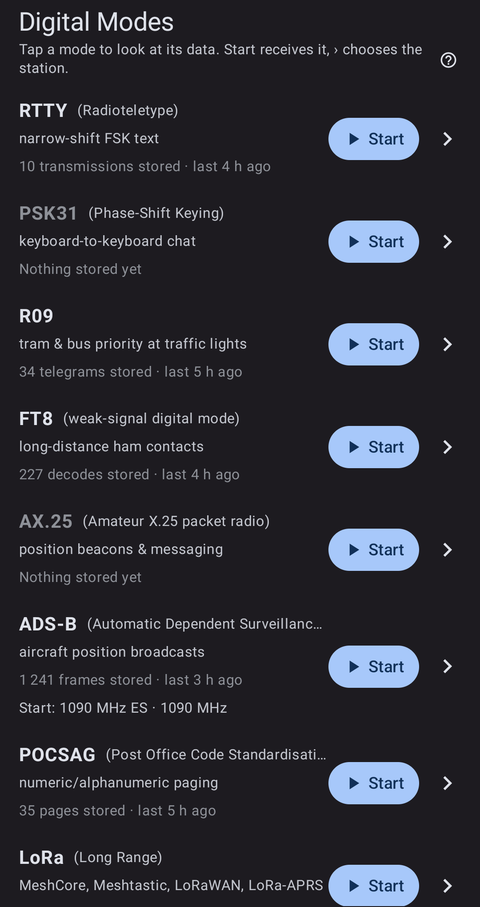
Each mode shows its name, what it is used for and how much of it is stored ("61 telegrams stored · last 8 min ago"). The mode shown at the moment has a check mark. There are three things to do with a mode:
- Tap the mode to look at its stored data. This changes nothing about what is being received: you can browse yesterday's APRS stations while FT8 keeps decoding. A mode with nothing stored is greyed out.
- Tap Start to receive the mode on the station you started it with last (shown below the mode: "Start: FT8 20m · 14.074 MHz"). A mode you haven't started yet opens its stations instead.
- Tap › to choose a station:
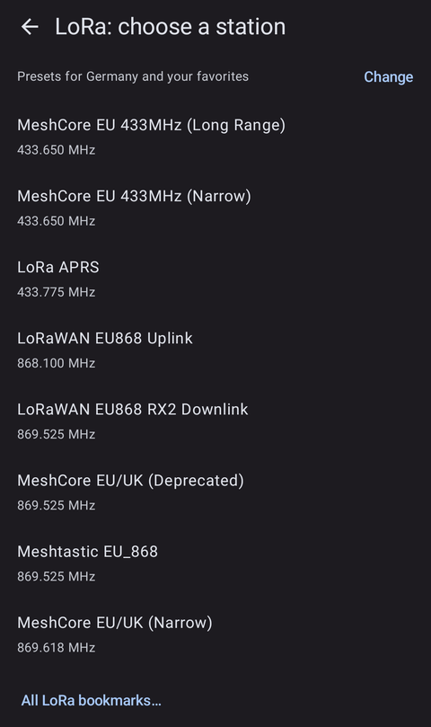
The stations are the presets of the Digital Stations list for your country or region (see Location) and your favorite bookmarks of the mode; with your position set, the nearest come first (R09 cities, for example). Change opens the location. All … bookmarks opens the Bookmark Manager with every bookmark of the mode - to have one of them here, mark it as favorite.
Starting a station selects the mode, tunes the channel, sets the channel width and the station's settings (for example the baud rate), raises the sample rate if the mode needs more, retunes the source if the station isn't received yet, and starts the analyzer. The view only moves if the station isn't visible in it. The tab switches to the mode; for a mode with several sections (LoRa's networks, AX.25's APRS and packet stations) the Overview shows the section of the first packet received.
The mode being received says Receiving on and its frequency, and offers Stop instead of Start:
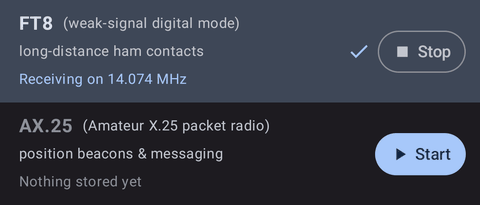
Good to know:
- Set up your source first (Source tab). With a recording as the source, Start can't retune: it only moves the channel within the recorded band, and tells you if the recording doesn't cover the target ("The file (144366 - 144414 kHz) doesn't cover APRS 144.800 MHz"). Then set the mode up by hand in the Demodulation tab.
- While a recording is running, a station outside the recorded band (or, for a baseband recording, another channel) asks to stop the recording first.
- The tab follows the Demodulation tab: when you select another digital mode there, the Digital tab shows it. Selecting an analog mode leaves the tab on the last digital mode.
- The ? at the top of the list opens this section of the manual.
Overview
The Overview lists the objects a mode tracks: one row per station, aircraft, capcode, vehicle or mesh node, built from all packets received from it. RTTY and PSK31 are the exception: each row is one received transmission.
A row shows, from left to right:
- the identity: callsign, name, address or capcode, with a symbol where the mode has one (APRS symbol, country flag, aircraft type),
- what the object sent last, in words. Text that doesn't fit continues on a second line,
- short value columns where the mode has them (for example R09's Kurs and Meldepunkt, ADS-B's altitude and speed). Columns that don't fit on a narrow screen are listed in the opened row instead,
- the last column: how long ago it was heard ("8 s", "5 min", "3 h", "11 d"), or the value the list is sorted by.
A row flashes when its object is heard again (not for RDS and ADS-B, which are heard several times a second). While the list is sorted by last heard and you are at the top, new arrivals come in at the top and the list follows them. When you have scrolled down or opened a row, the list stays where it is; the ^ button takes you back to the top.
The header line above the rows gives the number of rows ("70 Calls"; while a filter is set "12 of 67 Calls") and a short summary, for example how many stations sent a position, the continents of FT8 stations or the number of repeaters. Each mode's page explains its figures. Modes with sections show the number of rows on each section's tab instead.
Sections
AX.25 and LoRa list more than one kind of object, each in its own section: AX.25 has APRS and Packet, LoRa has MeshCore, Meshtastic, MeshCom, LoRaWAN and LoRa-APRS. The section tabs in the header line show how many rows each section has; a dot marks a section that has heard something since you last selected it. The tabs scroll sideways if they don't fit. The ticker above them shows everything the mode receives, whatever section is selected.
Sorting
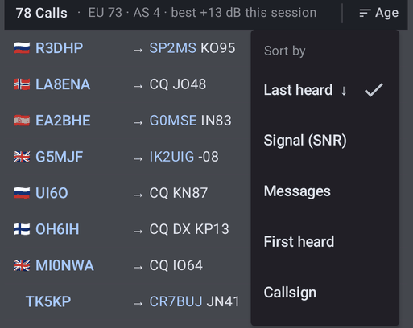
Tap the sort control at the right of the header line to pick the order. The options depend on the mode; all have Last heard (the default, newest first) and a name or number order. The last column of each row shows the value the list is sorted by, so "SNR" puts the signal strength there. Sorted by name, the column keeps showing the age. Pick the selected option again to reverse the order; the arrow next to it shows the direction.
This Session and Before
While the shown mode is being received, the Overview separates what was heard in this session (since the analyzer was started) from what was heard before:
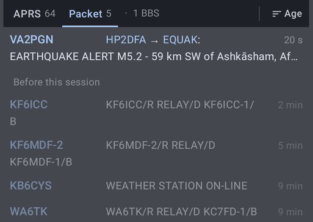
Rows not heard in this session are drawn faded below the divider Before this session. When you look at stored data, nothing is faded, except ADS-B aircraft that haven't been heard for five minutes.
Opening a Row
Tap a row to open it:
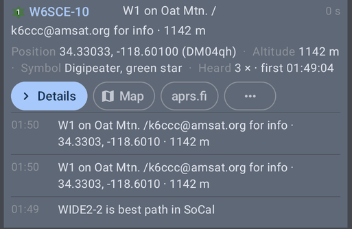
- Facts: what the row has no room for, as one running text: position, type, signal, first heard and so on. "Heard 3 × · first 01:49:04" is how many packets were received from it and when the first one arrived.
- Buttons: Details (see below), Map for an object with a position, and lookups such as aprs.fi, QRZ.com, PSKReporter or FlightAware. Lookups open the website in your browser.
- ⋯: more actions, for example copying the callsign, sharing the object as JSON or opening its position in your maps app.
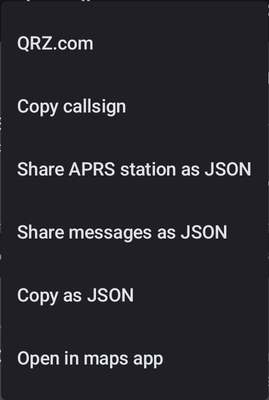
- The latest messages of the object, newest first. Tap one to open its card right there (see Raw for what a card shows). While a card is open, the list holds still; "2 new messages - tap to show" brings in what arrived meanwhile. "+12 older - all on the details page" leads to the details page.
Tap the row again to close it. A long press on a row opens the same actions as a menu, without opening the row.
Details Page
Details shows the object on a page of its own, with all its facts, all its actions and its stored messages: the newest 200, and "Show 200 more" at the end reads further back, as far as the object's messages are stored. The back arrow or your phone's back gesture returns to the list where you left it.
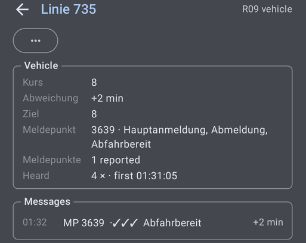
The Ticker
While the shown mode is being received, the ticker above the list shows the newest packet: who sent it and what it says. Its border label names the mode, the frequency and, where it varies, the speed ("AX.25 · 144.390 MHz · 1200 Bd"). The border flashes when a new packet arrives, and the age counts up. Until the first packet of a session it says "Listening on 144.390 MHz…".
The ticker has one line at the drawer's normal height and up to three when you pull the drawer up. Where there is more to read, a chevron in its border shows that it opens: tap it to see
- the text being received, at more length: RTTY and PSK31,
- a log of the session's last packets, newest on top: AX.25, LoRa and POCSAG.
FT8 and ADS-B have no ticker: their rows are the news. The ticker is not affected by the search and filter.
Raw
The Raw view shows every stored packet of the mode as a card, newest first (⋮ → Oldest First reverses the order).

A closed card has one header line and the content:
- the identity of the sender, with its symbol,
- a small subtitle: the kind of packet, the channel, the path it took,
- a tag where the type is part of the message (for example an R09 report type or an FT8 contest message),
- a warning in red when something is wrong, such as CRC error (the packet arrived damaged) or Emergency. Nothing is shown when everything is fine,
- the time: "20:13:39" today, "06.11. 20:13" on an earlier day,
- below it the content in words, up to three lines.
Tap a card to open it:

- The time becomes the full date and time, to the millisecond.
- The fields list everything the packet says, including what the header line had to shorten.
- The small grey radio line below them describes the reception: for example the frame type, the speed, the signal-to-noise ratio, how far the signal was off the channel, and the frequency.
- Raw · 100 bytes opens the packet's bytes as a hex dump, for those who want to check the decoding.
- The buttons: Map, lookups, Copy text, Share as JSON, and in ⋯ Copy as JSON and more. A long press on a card opens the same actions.
While you read further down, new packets don't move the list: a button counts them ("5 new") and takes you back to the top.
Map
The Map shows everything of the shown mode that reported a position: APRS and LoRa-APRS stations, FT8 stations (at the centre of their grid square), MeshCore and Meshtastic nodes, MeshCom stations, and aircraft. Pagers, R09 vehicles, RDS stations, LoRaWAN devices and packet BBSes and nodes send no position.
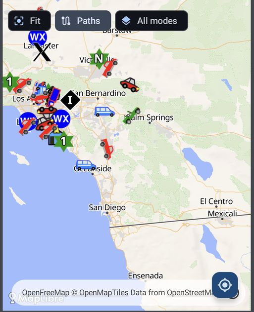
- The first time you open a mode's map, it zooms to what was heard recently (in this session while the mode is received, else within a day of the newest). Without any positions, it shows your area from Settings → Location: your grid locator's square (drawn on the map as your home), your device's location, or your country. After that it stays where you put it, also when new positions arrive. Each mode keeps its own map position while the app runs.
- Tap a marker to see the object's latest data, its recent packets and its actions. Tap the card to close it. For APRS stations, Follow (in ⋯) keeps the map on the moving station until you move the map yourself.
- Tap an empty spot to show the map controls for a few seconds: Fit zooms to the recent markers (to your area if there are none), Paths shows the tracks of moving objects, All modes shows the objects of every mode at once. The button at the bottom right moves the map to where the phone is right now, to about 2 km; it needs the location permission. For ADS-B, a colour key of the altitudes appears too. The same options are in the ⋮ menu.
- A faded marker was not heard in this session (or, for aircraft, not in the last five minutes).
- Map in an opened row, on a card or in a popup switches to the map and follows that object.
- Paths are drawn from the positions received while the app runs; they are not stored.
Map data: © OpenFreeMap, © OpenMapTiles, data © OpenStreetMap contributors. The map tiles are loaded from the internet.
Search and Filter
Tap the magnifying glass to show the filter row. A dot on it means a filter is set, also when the row is hidden. The filter applies to all three views, so the Map shows exactly what the Overview lists.
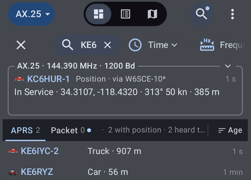
- Search: type part of a callsign, name, address or text. It matches anything the decoded data contains, not case-sensitive. The Overview lists the objects that match; the Raw view lists the packets that match, plus all packets of the matching objects (so searching for an aircraft's callsign also finds its position frames, which don't contain the callsign).
- Time: Last hour, Last 24h, Last 7d or All time, or a custom range with From and To (date and time). An object is listed if it was heard at least once in the range.
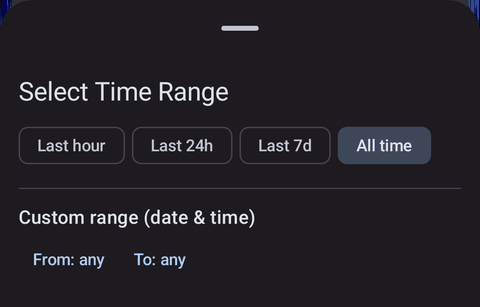
- Frequency: a start and end frequency. Useful when you received the same mode on several channels, for example FT8 on several bands.
- ✕ clears all filters (the shown mode and the sort order stay).
While a filter is set, the header line says how many rows match ("12 of 67 Calls"; the section tabs of AX.25 and LoRa count only the matching rows) and an empty list says so ("No calls match the filter.").
Sharing and Exporting
Every packet, object and list can be shared as JSON, a text format that spreadsheets, scripts and other programs can read:
- A packet (its card): Copy text copies the content as you see it, Share as JSON and Copy as JSON the packet with all its fields.
- An object (its row, details page or map popup): Share … as JSON shares what is known about it, Share messages as JSON all its stored packets, Copy as JSON copies the object.
- Many packets: ⋮ → Share… shares the packets that match the filter (a search: just the search results), all packets of the shown mode, or every stored packet, as one JSON file. Pick the app to send it to (mail, cloud storage, a messenger, ...).
Each packet in the JSON has the mode, the time (in UTC, ISO 8601), the
frequency, the object it belongs to, the received bytes as hex (raw), the
reception details (phy) and the decoded content (data).
Deleting Data
⋮ → Delete… clears everything recorded for the shown mode, or everything, all modes: the packets and the objects built from them. This can't be undone.
How Much Is Stored
Packets are stored without a time limit, but for the modes with many packets the oldest are removed when a mode reaches its limit:
| Mode | Packets kept | About |
|---|---|---|
| RDS | 20 000 | 30 minutes of one station |
| ADS-B | 100 000 | 20 to 30 minutes near a busy airport |
| FT8 | 200 000 | a day of continuous decoding on a busy band |
| AX.25, LoRa | 100 000 each | days to weeks |
| RTTY, PSK31, R09, POCSAG | all |
The objects (stations, aircraft, ...) stay when their old packets are removed, with their counts and last known state.
Replaying Recordings
Recordings are decoded like live signals (see Recordings). How the tab treats their time depends on the mode:
- FT8 and LoRa packets carry the time of the recording. While a recording plays, the tab counts in the recording's time: ages, the session, the ticker and the order of the Raw list follow the playback as if it were received now. Afterwards the packets keep their original date.
- All other modes stamp a packet with the time it was decoded, also when it comes from a recording.
Processing Overload
If the phone can't keep up with the signal, the tab shows a notice over its content:
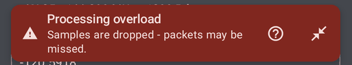
? explains what helps (see Processing Overload). The second button minimizes the notice to a red ! next to the search button; tap it to see the notice again. It disappears half a minute after the overload ends.
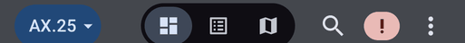
Tips & Troubleshooting
Nothing appears
- Look for a notice below the header: it says when the extension is missing, needs an update or doesn't respond (see When Digital Modes Can't Be Received).
- Check that the mode button is filled: only then is the shown mode being received. If it's outlined, tap it and Start the mode.
- The ticker says "Listening on …" until the first packet arrives. Look at the waterfall: is there a signal in the channel? See the mode's page for typical frequencies and what its signals look like.
- Check that no filter is set (a dot on the magnifying glass).
A mode in the list is greyed out: nothing of it is stored yet. You can still start it.
Old data is mixed with new data: while the mode is received, everything heard before this session is faded below Before this session. To see one period only, use the Time filter; to start over, ⋮ → Delete….
The list doesn't move although packets arrive: it follows new arrivals only when it is sorted by Last heard, scrolled to the top and no row is open.